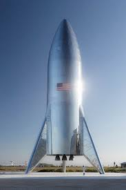

Dragon is a free-flying spacecraft designed to deliver both cargo and people to orbiting destinations. Dragon made history in 2012 when it became the first commercial spacecraft in history to deliver cargo to the International Space Station and safely return cargo to Earth, a feat previously achieved only by governments.
It is the only spacecraft currently flying that is capable of returning significant amounts of cargo to Earth. Currently Dragon carries cargo to space, but it was designed from the beginning to carry humans. Under an agreement with NASA, SpaceX is now developing the refinements that will enable Dragon to fly crew. Dragon's first manned test flight is expected to take place as early as 2018.
SpaceX designs, manufactures and launches advanced rockets and spacecraft. The company was founded in 2002 to revolutionize space technology, with the ultimate goal of enabling people to live on other planets.
The Dragon spacecraft is capable of carrying up to 7 passengers to and from Earth orbit, and beyond. It is the only spacecraft currently flying that is capable of returning significant amounts of cargo to Earth, and is the first private spacecraft to take humans to the space station.
